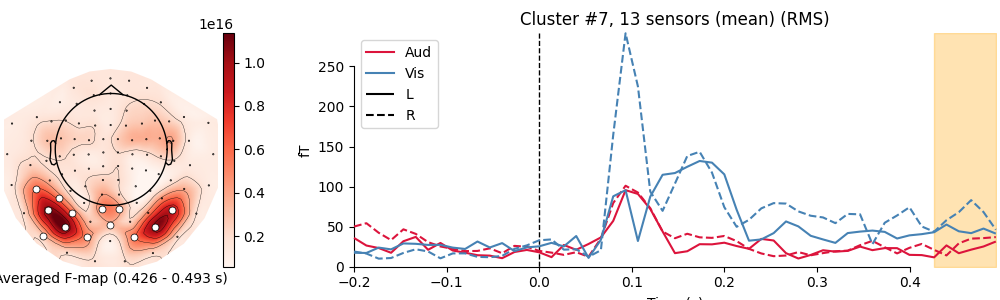

Note
Click here to download the full example code
Spatiotemporal permutation F-test on full sensor data¶
Tests for differential evoked responses in at least one condition using a permutation clustering test. The FieldTrip neighbor templates will be used to determine the adjacency between sensors. This serves as a spatial prior to the clustering. Spatiotemporal clusters will then be visualized using custom matplotlib code.
See the FieldTrip website for a caveat regarding the possible interpretation of “significant” clusters.
# Authors: Denis Engemann <denis.engemann@gmail.com>
# Jona Sassenhagen <jona.sassenhagen@gmail.com>
#
# License: BSD-3-Clause
import numpy as np
import matplotlib.pyplot as plt
from mpl_toolkits.axes_grid1 import make_axes_locatable
import mne
from mne.stats import spatio_temporal_cluster_test
from mne.datasets import sample
from mne.channels import find_ch_adjacency
from mne.viz import plot_compare_evokeds
print(__doc__)
Set parameters¶
data_path = sample.data_path()
raw_fname = data_path + '/MEG/sample/sample_audvis_filt-0-40_raw.fif'
event_fname = data_path + '/MEG/sample/sample_audvis_filt-0-40_raw-eve.fif'
event_id = {'Aud/L': 1, 'Aud/R': 2, 'Vis/L': 3, 'Vis/R': 4}
tmin = -0.2
tmax = 0.5
# Setup for reading the raw data
raw = mne.io.read_raw_fif(raw_fname, preload=True)
raw.filter(1, 30, fir_design='firwin')
events = mne.read_events(event_fname)
Out:
Opening raw data file /home/circleci/mne_data/MNE-sample-data/MEG/sample/sample_audvis_filt-0-40_raw.fif...
Read a total of 4 projection items:
PCA-v1 (1 x 102) idle
PCA-v2 (1 x 102) idle
PCA-v3 (1 x 102) idle
Average EEG reference (1 x 60) idle
Range : 6450 ... 48149 = 42.956 ... 320.665 secs
Ready.
Reading 0 ... 41699 = 0.000 ... 277.709 secs...
Filtering raw data in 1 contiguous segment
Setting up band-pass filter from 1 - 30 Hz
FIR filter parameters
---------------------
Designing a one-pass, zero-phase, non-causal bandpass filter:
- Windowed time-domain design (firwin) method
- Hamming window with 0.0194 passband ripple and 53 dB stopband attenuation
- Lower passband edge: 1.00
- Lower transition bandwidth: 1.00 Hz (-6 dB cutoff frequency: 0.50 Hz)
- Upper passband edge: 30.00 Hz
- Upper transition bandwidth: 7.50 Hz (-6 dB cutoff frequency: 33.75 Hz)
- Filter length: 497 samples (3.310 sec)
Read epochs for the channel of interest¶
picks = mne.pick_types(raw.info, meg='mag', eog=True)
reject = dict(mag=4e-12, eog=150e-6)
epochs = mne.Epochs(raw, events, event_id, tmin, tmax, picks=picks,
baseline=None, reject=reject, preload=True)
epochs.drop_channels(['EOG 061'])
epochs.equalize_event_counts(event_id)
X = [epochs[k].get_data() for k in event_id] # as 3D matrix
X = [np.transpose(x, (0, 2, 1)) for x in X] # transpose for clustering
Out:
Not setting metadata
Not setting metadata
288 matching events found
No baseline correction applied
Created an SSP operator (subspace dimension = 3)
4 projection items activated
Loading data for 288 events and 106 original time points ...
Rejecting epoch based on EOG : ['EOG 061']
Rejecting epoch based on EOG : ['EOG 061']
Rejecting epoch based on EOG : ['EOG 061']
Rejecting epoch based on EOG : ['EOG 061']
Rejecting epoch based on EOG : ['EOG 061']
Rejecting epoch based on EOG : ['EOG 061']
Rejecting epoch based on EOG : ['EOG 061']
Rejecting epoch based on EOG : ['EOG 061']
Rejecting epoch based on EOG : ['EOG 061']
Rejecting epoch based on EOG : ['EOG 061']
Rejecting epoch based on EOG : ['EOG 061']
Rejecting epoch based on EOG : ['EOG 061']
Rejecting epoch based on EOG : ['EOG 061']
Rejecting epoch based on EOG : ['EOG 061']
Rejecting epoch based on EOG : ['EOG 061']
Rejecting epoch based on MAG : ['MEG 1711']
Rejecting epoch based on EOG : ['EOG 061']
Rejecting epoch based on EOG : ['EOG 061']
Rejecting epoch based on EOG : ['EOG 061']
Rejecting epoch based on EOG : ['EOG 061']
Rejecting epoch based on EOG : ['EOG 061']
Rejecting epoch based on MAG : ['MEG 1711']
Rejecting epoch based on EOG : ['EOG 061']
Rejecting epoch based on EOG : ['EOG 061']
Rejecting epoch based on EOG : ['EOG 061']
Rejecting epoch based on EOG : ['EOG 061']
Rejecting epoch based on EOG : ['EOG 061']
Rejecting epoch based on EOG : ['EOG 061']
Rejecting epoch based on EOG : ['EOG 061']
Rejecting epoch based on EOG : ['EOG 061']
Rejecting epoch based on EOG : ['EOG 061']
Rejecting epoch based on EOG : ['EOG 061']
Rejecting epoch based on EOG : ['EOG 061']
Rejecting epoch based on EOG : ['EOG 061']
Rejecting epoch based on EOG : ['EOG 061']
Rejecting epoch based on EOG : ['EOG 061']
Rejecting epoch based on EOG : ['EOG 061']
Rejecting epoch based on EOG : ['EOG 061']
Rejecting epoch based on EOG : ['EOG 061']
Rejecting epoch based on EOG : ['EOG 061']
Rejecting epoch based on EOG : ['EOG 061']
Rejecting epoch based on EOG : ['EOG 061']
Rejecting epoch based on EOG : ['EOG 061']
Rejecting epoch based on EOG : ['EOG 061']
Rejecting epoch based on EOG : ['EOG 061']
Rejecting epoch based on EOG : ['EOG 061']
Rejecting epoch based on EOG : ['EOG 061']
Rejecting epoch based on EOG : ['EOG 061']
Rejecting epoch based on EOG : ['EOG 061']
49 bad epochs dropped
Removing projector <Projection | Average EEG reference, active : True, n_channels : 60>
Dropped 19 epochs: 50, 51, 84, 93, 95, 96, 129, 146, 149, 150, 154, 156, 157, 189, 194, 200, 202, 210, 211
Find the FieldTrip neighbor definition to setup sensor adjacency¶
adjacency, ch_names = find_ch_adjacency(epochs.info, ch_type='mag')
print(type(adjacency)) # it's a sparse matrix!
plt.imshow(adjacency.toarray(), cmap='gray', origin='lower',
interpolation='nearest')
plt.xlabel('{} Magnetometers'.format(len(ch_names)))
plt.ylabel('{} Magnetometers'.format(len(ch_names)))
plt.title('Between-sensor adjacency')
Out:
Reading adjacency matrix for neuromag306mag.
<class 'scipy.sparse.csr.csr_matrix'>
Compute permutation statistic¶
How does it work? We use clustering to “bind” together features which are similar. Our features are the magnetic fields measured over our sensor array at different times. This reduces the multiple comparison problem. To compute the actual test-statistic, we first sum all F-values in all clusters. We end up with one statistic for each cluster. Then we generate a distribution from the data by shuffling our conditions between our samples and recomputing our clusters and the test statistics. We test for the significance of a given cluster by computing the probability of observing a cluster of that size. For more background read: Maris/Oostenveld (2007), “Nonparametric statistical testing of EEG- and MEG-data” Journal of Neuroscience Methods, Vol. 164, No. 1., pp. 177-190. doi:10.1016/j.jneumeth.2007.03.024
# set cluster threshold
threshold = 50.0 # very high, but the test is quite sensitive on this data
# set family-wise p-value
p_accept = 0.01
cluster_stats = spatio_temporal_cluster_test(X, n_permutations=1000,
threshold=threshold, tail=1,
n_jobs=1, buffer_size=None,
adjacency=adjacency)
T_obs, clusters, p_values, _ = cluster_stats
good_cluster_inds = np.where(p_values < p_accept)[0]
Out:
stat_fun(H1): min=0.004107 max=196.094418
Running initial clustering
Found 8 clusters
Permuting 999 times...
0%| | : 0/999 [00:00<?, ?it/s]
0%| | : 1/999 [00:00<00:34, 29.15it/s]
0%| | : 3/999 [00:00<00:22, 44.19it/s]
1%| | : 6/999 [00:00<00:16, 59.55it/s]
1%| | : 9/999 [00:00<00:14, 67.32it/s]
1%|1 | : 11/999 [00:00<00:15, 65.37it/s]
1%|1 | : 14/999 [00:00<00:14, 69.70it/s]
2%|1 | : 16/999 [00:00<00:14, 67.92it/s]
2%|1 | : 18/999 [00:00<00:14, 66.57it/s]
2%|2 | : 21/999 [00:00<00:14, 69.51it/s]
2%|2 | : 24/999 [00:00<00:13, 71.83it/s]
3%|2 | : 26/999 [00:00<00:13, 70.26it/s]
3%|2 | : 29/999 [00:00<00:13, 72.20it/s]
3%|3 | : 31/999 [00:00<00:13, 70.85it/s]
3%|3 | : 33/999 [00:00<00:13, 69.66it/s]
4%|3 | : 37/999 [00:00<00:12, 74.17it/s]
4%|3 | : 39/999 [00:00<00:13, 72.80it/s]
4%|4 | : 41/999 [00:00<00:13, 71.59it/s]
4%|4 | : 44/999 [00:00<00:13, 73.01it/s]
5%|4 | : 46/999 [00:00<00:13, 71.87it/s]
5%|4 | : 48/999 [00:00<00:13, 70.87it/s]
5%|5 | : 52/999 [00:00<00:12, 74.41it/s]
5%|5 | : 54/999 [00:00<00:12, 73.20it/s]
6%|5 | : 56/999 [00:00<00:13, 72.16it/s]
6%|6 | : 60/999 [00:00<00:12, 75.31it/s]
6%|6 | : 62/999 [00:00<00:12, 74.13it/s]
6%|6 | : 64/999 [00:00<00:12, 73.08it/s]
7%|6 | : 67/999 [00:00<00:12, 74.09it/s]
7%|6 | : 69/999 [00:00<00:12, 73.05it/s]
7%|7 | : 72/999 [00:00<00:12, 74.02it/s]
8%|7 | : 75/999 [00:01<00:12, 74.90it/s]
8%|7 | : 77/999 [00:01<00:12, 73.87it/s]
8%|8 | : 80/999 [00:01<00:12, 74.75it/s]
8%|8 | : 83/999 [00:01<00:12, 75.58it/s]
9%|8 | : 85/999 [00:01<00:12, 74.55it/s]
9%|8 | : 88/999 [00:01<00:12, 75.35it/s]
9%|9 | : 90/999 [00:01<00:12, 74.38it/s]
9%|9 | : 92/999 [00:01<00:12, 73.44it/s]
10%|9 | : 95/999 [00:01<00:12, 74.30it/s]
10%|9 | : 98/999 [00:01<00:11, 75.09it/s]
10%|# | : 100/999 [00:01<00:12, 74.12it/s]
10%|# | : 102/999 [00:01<00:12, 73.24it/s]
11%|# | : 105/999 [00:01<00:12, 74.08it/s]
11%|# | : 107/999 [00:01<00:12, 73.20it/s]
11%|#1 | : 110/999 [00:01<00:12, 74.02it/s]
11%|#1 | : 112/999 [00:01<00:12, 73.20it/s]
11%|#1 | : 114/999 [00:01<00:12, 72.38it/s]
12%|#1 | : 118/999 [00:01<00:11, 74.85it/s]
12%|#2 | : 120/999 [00:01<00:11, 73.98it/s]
12%|#2 | : 122/999 [00:01<00:11, 73.16it/s]
13%|#2 | : 125/999 [00:01<00:11, 73.97it/s]
13%|#2 | : 127/999 [00:01<00:11, 73.17it/s]
13%|#2 | : 129/999 [00:01<00:12, 72.41it/s]
13%|#3 | : 132/999 [00:01<00:11, 73.27it/s]
14%|#3 | : 135/999 [00:01<00:11, 74.08it/s]
14%|#3 | : 137/999 [00:01<00:11, 73.28it/s]
14%|#4 | : 140/999 [00:01<00:11, 74.08it/s]
14%|#4 | : 142/999 [00:01<00:11, 73.29it/s]
14%|#4 | : 144/999 [00:01<00:11, 72.53it/s]
15%|#4 | : 148/999 [00:02<00:11, 74.91it/s]
15%|#5 | : 150/999 [00:02<00:11, 74.08it/s]
15%|#5 | : 152/999 [00:02<00:11, 73.29it/s]
16%|#5 | : 155/999 [00:02<00:11, 74.08it/s]
16%|#5 | : 157/999 [00:02<00:11, 73.29it/s]
16%|#5 | : 159/999 [00:02<00:11, 72.55it/s]
16%|#6 | : 163/999 [00:02<00:11, 74.90it/s]
17%|#6 | : 165/999 [00:02<00:11, 74.04it/s]
17%|#6 | : 167/999 [00:02<00:11, 73.25it/s]
17%|#7 | : 170/999 [00:02<00:11, 74.02it/s]
17%|#7 | : 172/999 [00:02<00:11, 73.21it/s]
17%|#7 | : 174/999 [00:02<00:11, 72.45it/s]
18%|#7 | : 178/999 [00:02<00:10, 74.78it/s]
18%|#8 | : 180/999 [00:02<00:11, 73.93it/s]
18%|#8 | : 182/999 [00:02<00:11, 73.17it/s]
19%|#8 | : 185/999 [00:02<00:11, 73.94it/s]
19%|#8 | : 187/999 [00:02<00:11, 73.16it/s]
19%|#8 | : 189/999 [00:02<00:11, 72.44it/s]
19%|#9 | : 192/999 [00:02<00:11, 73.26it/s]
19%|#9 | : 194/999 [00:02<00:11, 72.51it/s]
20%|#9 | : 197/999 [00:02<00:10, 73.32it/s]
20%|## | : 200/999 [00:02<00:10, 74.08it/s]
20%|## | : 201/999 [00:02<00:11, 71.80it/s]
20%|## | : 204/999 [00:02<00:10, 72.64it/s]
21%|## | : 207/999 [00:02<00:10, 73.43it/s]
21%|## | : 209/999 [00:02<00:10, 72.68it/s]
21%|##1 | : 212/999 [00:02<00:10, 73.47it/s]
22%|##1 | : 215/999 [00:02<00:10, 74.23it/s]
22%|##1 | : 217/999 [00:02<00:10, 73.42it/s]
22%|##2 | : 220/999 [00:02<00:10, 74.17it/s]
22%|##2 | : 222/999 [00:03<00:10, 73.38it/s]
22%|##2 | : 224/999 [00:03<00:10, 72.62it/s]
23%|##2 | : 227/999 [00:03<00:10, 73.39it/s]
23%|##3 | : 230/999 [00:03<00:10, 74.14it/s]
23%|##3 | : 232/999 [00:03<00:10, 73.33it/s]
24%|##3 | : 235/999 [00:03<00:10, 74.06it/s]
24%|##3 | : 238/999 [00:03<00:10, 74.78it/s]
24%|##4 | : 240/999 [00:03<00:10, 73.94it/s]
24%|##4 | : 243/999 [00:03<00:10, 74.63it/s]
25%|##4 | : 245/999 [00:03<00:10, 73.83it/s]
25%|##4 | : 247/999 [00:03<00:10, 73.06it/s]
25%|##5 | : 250/999 [00:03<00:10, 73.80it/s]
25%|##5 | : 252/999 [00:03<00:10, 73.05it/s]
26%|##5 | : 255/999 [00:03<00:10, 73.79it/s]
26%|##5 | : 258/999 [00:03<00:09, 74.51it/s]
26%|##6 | : 260/999 [00:03<00:10, 73.73it/s]
26%|##6 | : 263/999 [00:03<00:09, 74.44it/s]
27%|##6 | : 266/999 [00:03<00:09, 75.12it/s]
27%|##6 | : 268/999 [00:03<00:09, 74.31it/s]
27%|##7 | : 270/999 [00:03<00:09, 73.51it/s]
27%|##7 | : 274/999 [00:03<00:09, 75.73it/s]
28%|##7 | : 276/999 [00:03<00:09, 74.89it/s]
28%|##7 | : 278/999 [00:03<00:09, 74.07it/s]
28%|##8 | : 282/999 [00:03<00:09, 76.25it/s]
28%|##8 | : 284/999 [00:03<00:09, 75.34it/s]
29%|##8 | : 286/999 [00:03<00:09, 74.49it/s]
29%|##9 | : 290/999 [00:03<00:09, 76.65it/s]
29%|##9 | : 292/999 [00:03<00:09, 75.72it/s]
29%|##9 | : 294/999 [00:03<00:09, 74.85it/s]
30%|##9 | : 297/999 [00:04<00:09, 75.52it/s]
30%|##9 | : 299/999 [00:04<00:09, 74.66it/s]
30%|### | : 302/999 [00:04<00:09, 75.32it/s]
31%|### | : 305/999 [00:04<00:09, 75.97it/s]
31%|### | : 307/999 [00:04<00:09, 75.07it/s]
31%|###1 | : 310/999 [00:04<00:09, 75.69it/s]
31%|###1 | : 313/999 [00:04<00:08, 76.32it/s]
32%|###1 | : 315/999 [00:04<00:09, 75.42it/s]
32%|###1 | : 318/999 [00:04<00:08, 76.05it/s]
32%|###2 | : 321/999 [00:04<00:08, 76.67it/s]
32%|###2 | : 323/999 [00:04<00:08, 75.75it/s]
33%|###2 | : 325/999 [00:04<00:08, 74.89it/s]
33%|###2 | : 328/999 [00:04<00:08, 75.32it/s]
33%|###3 | : 330/999 [00:04<00:08, 74.47it/s]
33%|###3 | : 333/999 [00:04<00:08, 75.14it/s]
34%|###3 | : 335/999 [00:04<00:08, 74.33it/s]
34%|###3 | : 337/999 [00:04<00:09, 73.53it/s]
34%|###4 | : 340/999 [00:04<00:08, 74.24it/s]
34%|###4 | : 343/999 [00:04<00:08, 74.94it/s]
35%|###4 | : 345/999 [00:04<00:08, 74.13it/s]
35%|###4 | : 348/999 [00:04<00:08, 74.83it/s]
35%|###5 | : 350/999 [00:04<00:08, 74.04it/s]
35%|###5 | : 352/999 [00:04<00:08, 73.25it/s]
36%|###5 | : 355/999 [00:04<00:08, 73.99it/s]
36%|###5 | : 357/999 [00:04<00:08, 73.24it/s]
36%|###5 | : 359/999 [00:04<00:08, 72.49it/s]
36%|###6 | : 363/999 [00:04<00:08, 74.73it/s]
37%|###6 | : 365/999 [00:04<00:08, 73.94it/s]
37%|###6 | : 367/999 [00:04<00:08, 73.17it/s]
37%|###7 | : 370/999 [00:05<00:08, 73.93it/s]
37%|###7 | : 372/999 [00:05<00:08, 73.19it/s]
37%|###7 | : 374/999 [00:05<00:08, 72.46it/s]
38%|###7 | : 378/999 [00:05<00:08, 74.71it/s]
38%|###8 | : 380/999 [00:05<00:08, 73.89it/s]
38%|###8 | : 382/999 [00:05<00:08, 73.12it/s]
39%|###8 | : 385/999 [00:05<00:08, 73.88it/s]
39%|###8 | : 387/999 [00:05<00:08, 73.10it/s]
39%|###8 | : 389/999 [00:05<00:08, 72.38it/s]
39%|###9 | : 393/999 [00:05<00:08, 74.64it/s]
39%|###9 | : 394/999 [00:05<00:08, 72.36it/s]
40%|###9 | : 397/999 [00:05<00:08, 73.13it/s]
40%|#### | : 400/999 [00:05<00:08, 73.89it/s]
40%|#### | : 402/999 [00:05<00:08, 73.11it/s]
40%|#### | : 404/999 [00:05<00:08, 72.38it/s]
41%|#### | : 407/999 [00:05<00:08, 73.17it/s]
41%|#### | : 409/999 [00:05<00:08, 72.41it/s]
41%|####1 | : 412/999 [00:05<00:08, 73.17it/s]
41%|####1 | : 414/999 [00:05<00:08, 72.47it/s]
42%|####1 | : 416/999 [00:05<00:08, 71.76it/s]
42%|####1 | : 419/999 [00:05<00:07, 72.56it/s]
42%|####2 | : 422/999 [00:05<00:07, 73.30it/s]
42%|####2 | : 424/999 [00:05<00:07, 72.55it/s]
43%|####2 | : 427/999 [00:05<00:07, 73.34it/s]
43%|####2 | : 429/999 [00:05<00:07, 72.61it/s]
43%|####3 | : 431/999 [00:05<00:07, 71.90it/s]
43%|####3 | : 434/999 [00:05<00:07, 72.72it/s]
44%|####3 | : 437/999 [00:05<00:07, 73.39it/s]
44%|####3 | : 439/999 [00:05<00:07, 72.64it/s]
44%|####4 | : 442/999 [00:06<00:07, 73.42it/s]
44%|####4 | : 444/999 [00:06<00:07, 72.70it/s]
45%|####4 | : 446/999 [00:06<00:07, 71.99it/s]
45%|####4 | : 449/999 [00:06<00:07, 72.81it/s]
45%|####5 | : 452/999 [00:06<00:07, 73.58it/s]
45%|####5 | : 454/999 [00:06<00:07, 72.83it/s]
46%|####5 | : 457/999 [00:06<00:07, 73.59it/s]
46%|####6 | : 460/999 [00:06<00:07, 74.33it/s]
46%|####6 | : 462/999 [00:06<00:07, 73.53it/s]
47%|####6 | : 466/999 [00:06<00:07, 75.72it/s]
47%|####6 | : 467/999 [00:06<00:07, 73.43it/s]
47%|####6 | : 469/999 [00:06<00:07, 72.70it/s]
47%|####7 | : 473/999 [00:06<00:07, 74.95it/s]
48%|####7 | : 475/999 [00:06<00:07, 74.14it/s]
48%|####7 | : 477/999 [00:06<00:07, 73.35it/s]
48%|####8 | : 481/999 [00:06<00:06, 75.56it/s]
48%|####8 | : 482/999 [00:06<00:07, 73.24it/s]
48%|####8 | : 484/999 [00:06<00:07, 72.51it/s]
49%|####8 | : 488/999 [00:06<00:06, 74.76it/s]
49%|####9 | : 490/999 [00:06<00:06, 73.93it/s]
49%|####9 | : 492/999 [00:06<00:06, 73.16it/s]
50%|####9 | : 496/999 [00:06<00:06, 75.38it/s]
50%|####9 | : 497/999 [00:06<00:06, 73.07it/s]
50%|##### | : 500/999 [00:06<00:06, 73.82it/s]
50%|##### | : 503/999 [00:06<00:06, 74.55it/s]
51%|##### | : 505/999 [00:06<00:06, 73.75it/s]
51%|##### | : 508/999 [00:06<00:06, 74.47it/s]
51%|#####1 | : 511/999 [00:06<00:06, 75.15it/s]
51%|#####1 | : 513/999 [00:06<00:06, 74.31it/s]
52%|#####1 | : 516/999 [00:06<00:06, 74.99it/s]
52%|#####1 | : 519/999 [00:07<00:06, 75.65it/s]
52%|#####2 | : 521/999 [00:07<00:06, 74.79it/s]
52%|#####2 | : 524/999 [00:07<00:06, 75.45it/s]
53%|#####2 | : 527/999 [00:07<00:06, 76.10it/s]
53%|#####2 | : 529/999 [00:07<00:06, 75.21it/s]
53%|#####3 | : 532/999 [00:07<00:06, 75.83it/s]
54%|#####3 | : 535/999 [00:07<00:06, 76.46it/s]
54%|#####3 | : 537/999 [00:07<00:06, 75.56it/s]
54%|#####4 | : 540/999 [00:07<00:06, 76.20it/s]
54%|#####4 | : 543/999 [00:07<00:05, 76.80it/s]
55%|#####4 | : 545/999 [00:07<00:05, 75.90it/s]
55%|#####4 | : 549/999 [00:07<00:05, 77.99it/s]
55%|#####5 | : 551/999 [00:07<00:05, 77.04it/s]
55%|#####5 | : 554/999 [00:07<00:05, 77.58it/s]
56%|#####5 | : 557/999 [00:07<00:05, 78.12it/s]
56%|#####5 | : 559/999 [00:07<00:05, 77.17it/s]
56%|#####6 | : 562/999 [00:07<00:05, 77.70it/s]
57%|#####6 | : 565/999 [00:07<00:05, 78.21it/s]
57%|#####6 | : 567/999 [00:07<00:05, 77.26it/s]
57%|#####7 | : 570/999 [00:07<00:05, 77.81it/s]
57%|#####7 | : 573/999 [00:07<00:05, 78.33it/s]
58%|#####7 | : 575/999 [00:07<00:05, 77.36it/s]
58%|#####7 | : 577/999 [00:07<00:05, 76.41it/s]
58%|#####8 | : 581/999 [00:07<00:05, 78.49it/s]
58%|#####8 | : 583/999 [00:07<00:05, 77.51it/s]
59%|#####8 | : 585/999 [00:07<00:05, 76.56it/s]
59%|#####8 | : 589/999 [00:07<00:05, 78.60it/s]
59%|#####9 | : 591/999 [00:07<00:05, 77.62it/s]
59%|#####9 | : 593/999 [00:07<00:05, 76.65it/s]
60%|#####9 | : 597/999 [00:08<00:05, 78.71it/s]
60%|#####9 | : 599/999 [00:08<00:05, 77.73it/s]
60%|###### | : 601/999 [00:08<00:05, 76.78it/s]
61%|###### | : 605/999 [00:08<00:04, 78.84it/s]
61%|###### | : 607/999 [00:08<00:05, 77.83it/s]
61%|###### | : 609/999 [00:08<00:05, 76.89it/s]
61%|######1 | : 613/999 [00:08<00:04, 78.92it/s]
62%|######1 | : 615/999 [00:08<00:04, 77.90it/s]
62%|######1 | : 618/999 [00:08<00:04, 78.43it/s]
62%|######2 | : 621/999 [00:08<00:04, 78.93it/s]
62%|######2 | : 623/999 [00:08<00:04, 77.91it/s]
63%|######2 | : 626/999 [00:08<00:04, 78.43it/s]
63%|######2 | : 629/999 [00:08<00:04, 78.92it/s]
63%|######3 | : 631/999 [00:08<00:04, 77.90it/s]
63%|######3 | : 634/999 [00:08<00:04, 78.40it/s]
64%|######3 | : 637/999 [00:08<00:04, 78.91it/s]
64%|######4 | : 640/999 [00:08<00:04, 79.39it/s]
64%|######4 | : 642/999 [00:08<00:04, 78.37it/s]
65%|######4 | : 646/999 [00:08<00:04, 80.34it/s]
65%|######4 | : 648/999 [00:08<00:04, 79.24it/s]
65%|######5 | : 651/999 [00:08<00:04, 79.69it/s]
65%|######5 | : 654/999 [00:08<00:04, 80.13it/s]
66%|######5 | : 656/999 [00:08<00:04, 79.06it/s]
66%|######5 | : 659/999 [00:08<00:04, 79.53it/s]
66%|######6 | : 662/999 [00:08<00:04, 79.98it/s]
66%|######6 | : 664/999 [00:08<00:04, 78.93it/s]
67%|######6 | : 667/999 [00:08<00:04, 79.40it/s]
67%|######7 | : 670/999 [00:08<00:04, 79.85it/s]
67%|######7 | : 673/999 [00:08<00:04, 80.27it/s]
68%|######7 | : 676/999 [00:08<00:04, 80.68it/s]
68%|######7 | : 679/999 [00:09<00:03, 81.07it/s]
68%|######8 | : 681/999 [00:09<00:03, 79.96it/s]
68%|######8 | : 684/999 [00:09<00:03, 80.38it/s]
69%|######8 | : 687/999 [00:09<00:03, 80.77it/s]
69%|######8 | : 689/999 [00:09<00:03, 79.67it/s]
69%|######9 | : 692/999 [00:09<00:03, 80.11it/s]
70%|######9 | : 695/999 [00:09<00:03, 80.53it/s]
70%|######9 | : 697/999 [00:09<00:03, 79.45it/s]
70%|####### | : 701/999 [00:09<00:03, 81.37it/s]
70%|####### | : 703/999 [00:09<00:03, 80.25it/s]
71%|####### | : 706/999 [00:09<00:03, 80.64it/s]
71%|####### | : 709/999 [00:09<00:03, 81.03it/s]
71%|#######1 | : 712/999 [00:09<00:03, 81.41it/s]
71%|#######1 | : 714/999 [00:09<00:03, 80.26it/s]
72%|#######1 | : 717/999 [00:09<00:03, 80.66it/s]
72%|#######2 | : 720/999 [00:09<00:03, 81.05it/s]
72%|#######2 | : 722/999 [00:09<00:03, 79.90it/s]
73%|#######2 | : 725/999 [00:09<00:03, 80.33it/s]
73%|#######2 | : 728/999 [00:09<00:03, 80.73it/s]
73%|#######3 | : 730/999 [00:09<00:03, 79.61it/s]
73%|#######3 | : 734/999 [00:09<00:03, 81.53it/s]
74%|#######3 | : 736/999 [00:09<00:03, 80.40it/s]
74%|#######3 | : 738/999 [00:09<00:03, 79.31it/s]
74%|#######4 | : 741/999 [00:09<00:03, 79.77it/s]
74%|#######4 | : 743/999 [00:09<00:03, 78.71it/s]
75%|#######4 | : 746/999 [00:09<00:03, 79.17it/s]
75%|#######4 | : 749/999 [00:09<00:03, 79.64it/s]
75%|#######5 | : 751/999 [00:09<00:03, 78.57it/s]
75%|#######5 | : 753/999 [00:09<00:03, 77.56it/s]
76%|#######5 | : 757/999 [00:10<00:03, 79.58it/s]
76%|#######5 | : 759/999 [00:10<00:03, 78.54it/s]
76%|#######6 | : 761/999 [00:10<00:03, 77.57it/s]
77%|#######6 | : 765/999 [00:10<00:02, 79.58it/s]
77%|#######6 | : 767/999 [00:10<00:02, 78.53it/s]
77%|#######6 | : 769/999 [00:10<00:02, 77.54it/s]
77%|#######7 | : 773/999 [00:10<00:02, 79.55it/s]
78%|#######7 | : 775/999 [00:10<00:02, 78.47it/s]
78%|#######7 | : 777/999 [00:10<00:02, 77.46it/s]
78%|#######8 | : 780/999 [00:10<00:02, 78.01it/s]
78%|#######8 | : 782/999 [00:10<00:02, 77.05it/s]
79%|#######8 | : 785/999 [00:10<00:02, 77.59it/s]
79%|#######8 | : 788/999 [00:10<00:02, 78.14it/s]
79%|#######9 | : 790/999 [00:10<00:02, 77.16it/s]
79%|#######9 | : 793/999 [00:10<00:02, 77.73it/s]
80%|#######9 | : 796/999 [00:10<00:02, 78.24it/s]
80%|#######9 | : 798/999 [00:10<00:02, 77.27it/s]
80%|######## | : 801/999 [00:10<00:02, 77.82it/s]
80%|######## | : 804/999 [00:10<00:02, 78.33it/s]
81%|######## | : 806/999 [00:10<00:02, 77.33it/s]
81%|######## | : 809/999 [00:10<00:02, 77.87it/s]
81%|########1 | : 812/999 [00:10<00:02, 78.39it/s]
81%|########1 | : 814/999 [00:10<00:02, 77.40it/s]
82%|########1 | : 817/999 [00:10<00:02, 77.93it/s]
82%|########2 | : 820/999 [00:10<00:02, 78.46it/s]
82%|########2 | : 822/999 [00:10<00:02, 77.44it/s]
83%|########2 | : 825/999 [00:10<00:02, 77.97it/s]
83%|########2 | : 828/999 [00:10<00:02, 78.49it/s]
83%|########3 | : 830/999 [00:10<00:02, 77.49it/s]
83%|########3 | : 833/999 [00:11<00:02, 78.04it/s]
84%|########3 | : 836/999 [00:11<00:02, 78.55it/s]
84%|########3 | : 838/999 [00:11<00:02, 77.57it/s]
84%|########4 | : 841/999 [00:11<00:02, 78.11it/s]
84%|########4 | : 843/999 [00:11<00:02, 77.16it/s]
85%|########4 | : 845/999 [00:11<00:02, 76.24it/s]
85%|########4 | : 848/999 [00:11<00:01, 76.85it/s]
85%|########5 | : 850/999 [00:11<00:01, 75.97it/s]
85%|########5 | : 853/999 [00:11<00:01, 76.59it/s]
86%|########5 | : 856/999 [00:11<00:01, 77.17it/s]
86%|########5 | : 858/999 [00:11<00:01, 76.27it/s]
86%|########6 | : 860/999 [00:11<00:01, 75.40it/s]
86%|########6 | : 863/999 [00:11<00:01, 76.06it/s]
87%|########6 | : 865/999 [00:11<00:01, 75.21it/s]
87%|########6 | : 867/999 [00:11<00:01, 74.39it/s]
87%|########7 | : 870/999 [00:11<00:01, 75.10it/s]
87%|########7 | : 872/999 [00:11<00:01, 74.28it/s]
88%|########7 | : 875/999 [00:11<00:01, 74.97it/s]
88%|########7 | : 878/999 [00:11<00:01, 75.64it/s]
88%|########8 | : 880/999 [00:11<00:01, 74.80it/s]
88%|########8 | : 883/999 [00:11<00:01, 75.47it/s]
89%|########8 | : 886/999 [00:11<00:01, 76.12it/s]
89%|########8 | : 888/999 [00:11<00:01, 75.25it/s]
89%|########9 | : 891/999 [00:11<00:01, 75.91it/s]
89%|########9 | : 894/999 [00:11<00:01, 76.54it/s]
90%|########9 | : 896/999 [00:11<00:01, 75.63it/s]
90%|########9 | : 899/999 [00:11<00:01, 76.26it/s]
90%|######### | : 902/999 [00:11<00:01, 76.86it/s]
90%|######### | : 904/999 [00:11<00:01, 75.94it/s]
91%|######### | : 907/999 [00:11<00:01, 76.55it/s]
91%|#########1| : 910/999 [00:12<00:01, 77.14it/s]
91%|#########1| : 912/999 [00:12<00:01, 76.21it/s]
92%|#########1| : 915/999 [00:12<00:01, 76.79it/s]
92%|#########1| : 918/999 [00:12<00:01, 77.38it/s]
92%|#########2| : 920/999 [00:12<00:01, 76.43it/s]
92%|#########2| : 923/999 [00:12<00:00, 77.00it/s]
93%|#########2| : 926/999 [00:12<00:00, 77.57it/s]
93%|#########2| : 928/999 [00:12<00:00, 76.61it/s]
93%|#########3| : 931/999 [00:12<00:00, 77.18it/s]
93%|#########3| : 934/999 [00:12<00:00, 77.70it/s]
94%|#########3| : 936/999 [00:12<00:00, 76.76it/s]
94%|#########3| : 939/999 [00:12<00:00, 77.34it/s]
94%|#########4| : 941/999 [00:12<00:00, 76.44it/s]
94%|#########4| : 943/999 [00:12<00:00, 75.55it/s]
95%|#########4| : 947/999 [00:12<00:00, 77.65it/s]
95%|#########4| : 949/999 [00:12<00:00, 76.72it/s]
95%|#########5| : 951/999 [00:12<00:00, 75.80it/s]
95%|#########5| : 954/999 [00:12<00:00, 76.42it/s]
96%|#########5| : 957/999 [00:12<00:00, 77.03it/s]
96%|#########5| : 959/999 [00:12<00:00, 76.08it/s]
96%|#########6| : 962/999 [00:12<00:00, 76.71it/s]
96%|#########6| : 964/999 [00:12<00:00, 75.83it/s]
97%|#########6| : 966/999 [00:12<00:00, 74.95it/s]
97%|#########7| : 970/999 [00:12<00:00, 77.10it/s]
97%|#########7| : 972/999 [00:12<00:00, 76.19it/s]
97%|#########7| : 974/999 [00:12<00:00, 75.31it/s]
98%|#########7| : 977/999 [00:12<00:00, 75.96it/s]
98%|#########7| : 979/999 [00:12<00:00, 75.11it/s]
98%|#########8| : 981/999 [00:12<00:00, 74.28it/s]
99%|#########8| : 985/999 [00:13<00:00, 76.47it/s]
99%|#########8| : 987/999 [00:13<00:00, 75.59it/s]
99%|#########8| : 989/999 [00:13<00:00, 74.75it/s]
99%|#########9| : 993/999 [00:13<00:00, 76.92it/s]
99%|#########9| : 994/999 [00:13<00:00, 74.53it/s]
100%|#########9| : 997/999 [00:13<00:00, 75.21it/s]
100%|##########| : 999/999 [00:13<00:00, 76.11it/s]
100%|##########| : 999/999 [00:13<00:00, 75.68it/s]
Computing cluster p-values
Done.
Note. The same functions work with source estimate. The only differences are the origin of the data, the size, and the adjacency definition. It can be used for single trials or for groups of subjects.
Visualize clusters¶
# configure variables for visualization
colors = {"Aud": "crimson", "Vis": 'steelblue'}
linestyles = {"L": '-', "R": '--'}
# organize data for plotting
evokeds = {cond: epochs[cond].average() for cond in event_id}
# loop over clusters
for i_clu, clu_idx in enumerate(good_cluster_inds):
# unpack cluster information, get unique indices
time_inds, space_inds = np.squeeze(clusters[clu_idx])
ch_inds = np.unique(space_inds)
time_inds = np.unique(time_inds)
# get topography for F stat
f_map = T_obs[time_inds, ...].mean(axis=0)
# get signals at the sensors contributing to the cluster
sig_times = epochs.times[time_inds]
# create spatial mask
mask = np.zeros((f_map.shape[0], 1), dtype=bool)
mask[ch_inds, :] = True
# initialize figure
fig, ax_topo = plt.subplots(1, 1, figsize=(10, 3))
# plot average test statistic and mark significant sensors
f_evoked = mne.EvokedArray(f_map[:, np.newaxis], epochs.info, tmin=0)
f_evoked.plot_topomap(times=0, mask=mask, axes=ax_topo, cmap='Reds',
vmin=np.min, vmax=np.max, show=False,
colorbar=False, mask_params=dict(markersize=10))
image = ax_topo.images[0]
# create additional axes (for ERF and colorbar)
divider = make_axes_locatable(ax_topo)
# add axes for colorbar
ax_colorbar = divider.append_axes('right', size='5%', pad=0.05)
plt.colorbar(image, cax=ax_colorbar)
ax_topo.set_xlabel(
'Averaged F-map ({:0.3f} - {:0.3f} s)'.format(*sig_times[[0, -1]]))
# add new axis for time courses and plot time courses
ax_signals = divider.append_axes('right', size='300%', pad=1.2)
title = 'Cluster #{0}, {1} sensor'.format(i_clu + 1, len(ch_inds))
if len(ch_inds) > 1:
title += "s (mean)"
plot_compare_evokeds(evokeds, title=title, picks=ch_inds, axes=ax_signals,
colors=colors, linestyles=linestyles, show=False,
split_legend=True, truncate_yaxis='auto')
# plot temporal cluster extent
ymin, ymax = ax_signals.get_ylim()
ax_signals.fill_betweenx((ymin, ymax), sig_times[0], sig_times[-1],
color='orange', alpha=0.3)
# clean up viz
mne.viz.tight_layout(fig=fig)
fig.subplots_adjust(bottom=.05)
plt.show()


- 

Out:
combining channels using "gfp"
combining channels using "gfp"
combining channels using "gfp"
combining channels using "gfp"
combining channels using "gfp"
combining channels using "gfp"
combining channels using "gfp"
combining channels using "gfp"
combining channels using "gfp"
combining channels using "gfp"
combining channels using "gfp"
combining channels using "gfp"
combining channels using "gfp"
combining channels using "gfp"
combining channels using "gfp"
combining channels using "gfp"
Exercises¶
What is the smallest p-value you can obtain, given the finite number of permutations?
use an F distribution to compute the threshold by traditional significance levels. Hint: take a look at
scipy.stats.f
Total running time of the script: ( 0 minutes 30.942 seconds)
Estimated memory usage: 128 MB